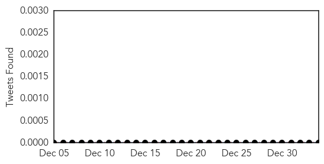

Yellow Fever
30-Day Web Trend
0 alerts, 0 warnings

30-Day Twitter Trend
0 alerts, 0 warnings

Article Locations


Article Confidences

Top Articles:
-
No articles found for Jan 03, 2015
Top Tweets:
-
No tweets found for Jan 03, 2015
Unknown
30-Day Web Trend
0 alerts, 0 warnings

30-Day Twitter Trend
0 alerts, 0 warnings

Article Locations

Article Confidences

Top Articles:
- 0.980
- Opposition blames Odisha government for jaundice outbreak
- 0.980
- Opposition blames Odisha government for jaundice outbreak
- 0.979
- Opposition blames Odisha government for jaundice outbreak
- 0.974
- Hunting the 'fiery serpent': The quest to wipe out Guinea worm
- 0.960
- Health officials concerned weather will increase cases of flu
- 0.946
- Fourth flu death confirmed in Dallas County - Story
- 0.936
- Flu didn’t take a holiday in South Carolina
- 0.920
- Opp lambasts Odisha govt for spread of jaundice in Sambalpur
- 0.917
- Chicago Tribune
- 0.917
- Chicago Tribune
- 0.917
- Chicago Tribune
- 0.917
- Chicago Tribune
- 0.917
- Chicago Tribune
- 0.917
- Chicago Tribune
- 0.917
- Chicago Tribune
- 0.917
- Chicago Tribune
- 0.900
- Latest flu deaths add to troubling U.S. epidemic
- 0.856
- Biloxi pharmacy offers free flu vaccines
- 0.852
- Thomasville pediatrician shares urgent message for parents about the flu
- 0.815
- Stubborn Thyroid Issues? Several Symptoms You Haven't Noticed
- 0.786
- Two new flu deaths are confirmed in Dallas County
- 0.784
- Preventative measures encouraged for limiting flu
- 0.689
- Salmonella Cluster Found in Massachusetts
- 0.672
- Ashland schools take action in chickenpox outbreak
- 0.585
- Video: French army train Lebanese troops
- 0.585
- British nurse with Ebola 'now critical'
- 0.585
- Swedes protest string of shocking mosque attacks
- 0.585
- Suspected Islamists kidnap dozens in Nigeria
- 0.585
- Migrant ‘ghost ship’ arrives in Italian port
- 0.585
- Israeli settlers hurl rocks at US diplomatic cars
- 0.585
- Egyptian Christians abducted by Islamists in Libya
- 0.585
- DR Congo tax on rape victim hospital sparks fury
- 0.584
- UK Ebola patient deteriorating
- 0.547
- British nurse with Ebola now in 'critical' condition, doctors say
- 0.537
- Massachusetts Department of Public Health Identifies Cluster of Salmonella Illnesses at Churrascaria Aveirense Restaurant
- 0.528
- Shortage of doctors to hit services at Dumka hosp
Top Tweets:
-
No tweets found for Jan 03, 2015